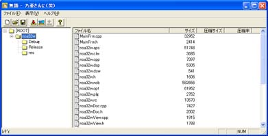
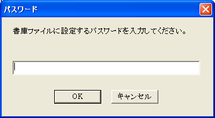

| noa32w - 乃亜さんに（笑） |
■ ファイルリスト編集
ウィンドウにファイルをドラッグ＆ドロップするとファイルリストにファイルを追加することが出来ます。
ファイルリストに登録されたファイルは、ファイルパスが保存されるだけでこの時点で圧縮されませんの注意してください。
ファイルリストはメニュー「上書き保存」、又は「名前をつけて保存」から保存することが出来ます。
ファイルリストを保存しておくと、後で同じファイルを再びアーカイブ化することが出来ます。
■ アーカイブ化
メニュー「アーカイブ化して保存」、又はツールバーのアイコン（）を押すと、現在のファイルリストに登録されているファイルをアーカイブ化します。
ファイルリストに登録されているファイルが削除されているとアーカイブ化できませんので注意してください。
メニュー「暗号化して書庫化」、又はツールバーのアイコン（）を押すと、現在のファイルリストに登録されているファイルを、暗号化してアーカイブ化します。
アーカイブファイル名を入力した後にパスワードを入力すると、パスワードを使って暗号化して保存されます。
|
Copyright
(C) 2003 Leshade Entis, Entis-soft. All rights reserved.
|